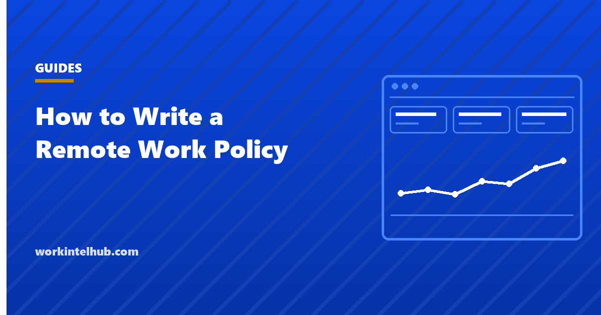

How to Write a Remote Work Policy

A remote work policy is the document that answers, in advance, the questions a manager and an employee will otherwise argue about later. Where may someone work from. What hours must they overlap. Who buys the laptop, and who may look at it. Most policies fail not because they are too strict but because they are silent on the specific thing that eventually goes wrong.
This page works through what a policy has to settle, in the order the questions actually arise, and flags the clauses that create the disputes. It is not a template to paste unedited, because the parts that matter most are the ones only you can answer.
Start from the disputes, not the template
Almost every remote work argument traces back to one of five silences: someone worked from a different state and payroll did not know, someone was unreachable at a time a colleague assumed was core hours, someone claimed an expense nobody had agreed to, someone discovered monitoring they had not been told about, or someone was refused a request that a colleague had been granted. A policy earns its keep by closing those five. The monitoring clause itself can be lifted from our ready-made monitoring policy.
Write it as answers, not principles. "We support flexibility" settles nothing. "Core overlap is 10am to 3pm in the employee's local time, and meetings outside that window need agreement in advance" settles a great deal.
Hours and availability
Decide whether you are buying hours or outcomes, and say which. If you are buying outcomes, stop specifying a start time, because doing both means people optimise for looking present rather than finishing work.
Name a core overlap window in the employee's local time, not the head office's. Say what response time you expect on chat, and be honest that a short one is expensive: Microsoft Work Trend Index reported in June 2025 that knowledge workers are interrupted roughly every two minutes, about 275 times a day, and that 48% of employees describe their work as chaotic and fragmented. An instant reply norm is the policy clause that produces that.
Set an out of hours expectation explicitly, including that there is none. Our guide to improving employee productivity covers why evening work is usually displaced day work rather than extra output.
Location, and the part that surprises employers
This is where policies most often fail, because the question is not really about geography. It is about tax, employment law and monitoring duty, all of which follow the employee.
State whether someone may work from a different state, and require notice before they do. An employee who relocates can create payroll registration obligations, change which employment laws apply, and change what notice you owe before monitoring them. Connecticut, Delaware and New York each require written notice of electronic monitoring, and that duty follows the employee rather than the head office, as our guide to employee monitoring laws by state sets out.
Say something about other countries even if the answer is no. Working abroad for a few weeks is the request that arrives with no warning and the least time to think.
Equipment, expenses and access
Three sentences prevent most of these arguments. Who owns the device. What the company will reimburse and up to what. What happens to the equipment and the data on it when someone leaves.
Ownership does more work than people expect. On company hardware an employer has the strongest position to install management software and to look at what it reports. On a personal machine that argument largely disappears, which is covered in whether an employer can track a laptop. If you allow personal devices, decide now what you will and will not install on them, because deciding later means deciding during an incident.
The monitoring clause
If you monitor anything, the policy has to say so, in plain terms, before it starts. This is both the legal position in three states and the difference between a policy people accept and one they discover.
Four things belong here: what is collected, what is not, who can see it, and how long it is kept. If you cannot write those four sentences, you are not ready to switch anything on. Our guide to writing a monitoring policy has the structure, and the privacy line covers what should never be collected at all. The wording employees actually sign is in our employee monitoring consent form.
Expect resistance to be specific rather than general. Pew Research Center found in 2023 that 61% of US adults oppose employers using AI to track workers' movements, while opposition to other uses was lower. People object to particular capabilities, not to the idea of a policy.
What the evidence says about the arrangement itself
Policy debates usually assume remote work costs output and the policy exists to claw it back. The strongest available evidence does not support that.
A randomised controlled trial of 1,612 employees at Trip.com, published in Nature, June 2024, compared five days in the office against three in and two at home over six months. Quit rates in the hybrid group were about a third lower, with no measurable impact on performance reviews or promotions. Effects were largest for non-managers, women, and employees with long commutes.
Attendance requirements are also less settled than they look. Pew Research Center found in January 2025, among 2,315 US adults whose jobs can be done from home, that 75% are now required in the office on certain days, up from 63% in early 2023, and that 46% would be unlikely to stay if they could no longer work from home. A policy that tightens location is making a retention decision whether or not it says so.
One thing the policy cannot settle on its own is how much work the team can absorb once the arrangement is running. That is covered in team capacity planning.
The policy in one page
| Section | The question it must answer | Common failure |
|---|---|---|
| Eligibility | Which roles can work remotely, and who decides | Left to managers, applied inconsistently |
| Hours | Core overlap window, in whose local time | Specified in head office time only |
| Availability | Expected response time, and out of hours expectation | Silence, which becomes "always" |
| Location | Other states, other countries, notice required | No notice rule, discovered at payroll |
| Equipment | Who owns it, what is reimbursed, return on exit | Personal devices allowed by default |
| Monitoring | What is collected, by whom, kept how long | Omitted entirely |
| Security | Networks, storage, what may not leave the device | Written for an office that no longer exists |
| Review | When the policy is revisited, and by whom | No date, so it ages silently |
Get the eight answered and the document mostly writes itself. Leave any of them blank and that is the one you will be arguing about.
Key takeaways
- A remote work policy is a set of answers, not a statement of values. Anything left to interpretation becomes the dispute.
- Specify core hours in the employee's local time, not the head office's.
- Location changes tax, employment law and monitoring notice duties, all of which follow the employee rather than the company.
- Device ownership decides how much monitoring you can justify, so settle it before allowing personal machines.
- If you monitor anything, say so before it starts. Three states require it and everyone else notices anyway.
- The Trip.com randomised trial found hybrid cut quit rates by about a third with no measurable performance cost.
- Tightening location requirements is a retention decision. Pew found 46% of remote-capable workers would be unlikely to stay without the option.
Frequently asked questions
What should a remote work policy include?
Eight sections: eligibility, hours and core overlap, availability and response times, location rules including other states and countries, equipment and expenses, monitoring, security, and a review date. The test of each is whether it answers a question rather than states a value.
Do I need a separate work from home policy?
Usually not. One document covering remote and hybrid arrangements is easier to keep current than two that drift apart. What matters is that it distinguishes fully remote roles from hybrid ones where attendance is required on named days.
Can a remote work policy say where employees may live?
It can require notice before someone works from a different state or country, and it can decline arrangements that create obligations the company cannot meet. That is different from dictating where someone lives, and the distinction is worth drawing carefully with counsel.
Does a remote work policy have to mention monitoring?
In Connecticut, Delaware and New York, employers must give written notice of electronic monitoring, and in Delaware and New York the employee must acknowledge it. Elsewhere it is not required by statute but remains the difference between a policy people accept and one they discover.
How do I set core hours across time zones?
Name the overlap window in the employee's local time and keep it short enough to be achievable across the spread you actually employ. A four or five hour overlap covers most collaboration. Anything wider effectively bans hiring outside a narrow band of longitudes.
Does remote work reduce productivity?
The strongest evidence says no. A randomised controlled trial of 1,612 employees at Trip.com, published in Nature in June 2024, found hybrid working cut quit rates by about a third with no measurable impact on performance reviews or promotions.
How often should the policy be reviewed?
Put a date in the document. Annually is enough in a stable organisation, but any change to headcount location, monitoring tooling, or state coverage should trigger an earlier look, because those are the three things that quietly make a policy inaccurate.